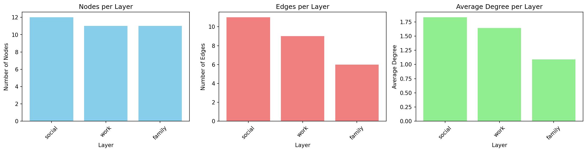
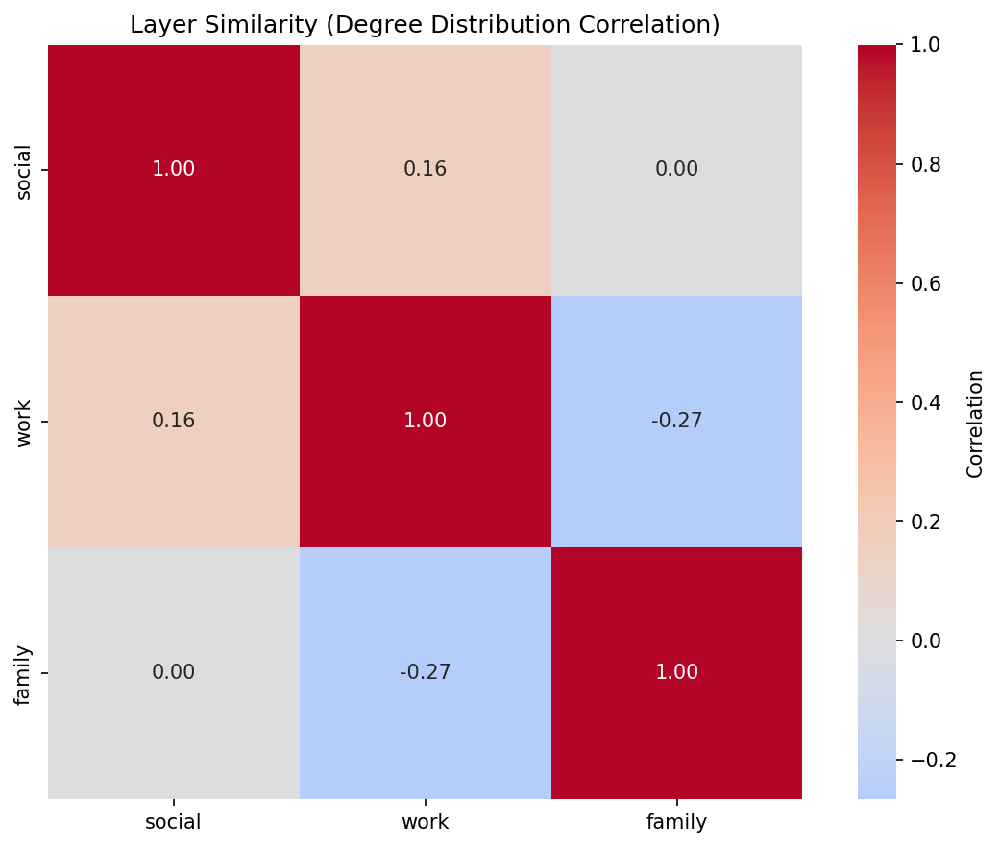
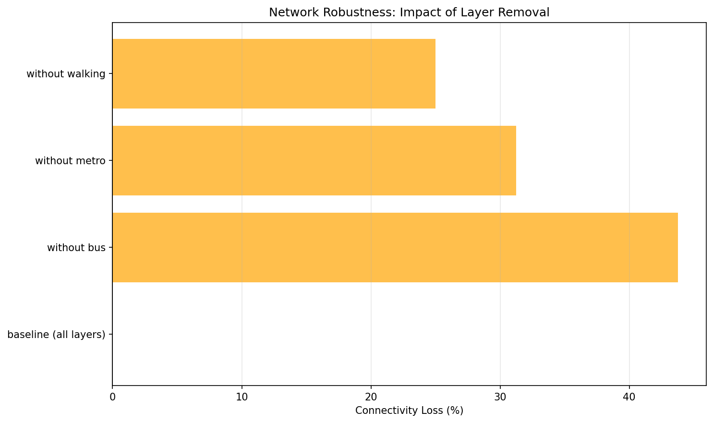

Query Zoo: DSL Gallery for Multilayer Analysis
The Query Zoo is a curated gallery of DSL queries that demonstrate the expressiveness and power of py3plex for multilayer network analysis.
Each example:
Solves a real multilayer analysis problem
Uses the DSL end-to-end with idiomatic patterns
Produces concrete, reproducible outputs
Is fully tested and documented
Why a Query Zoo?
The DSL is most powerful when you see it in action on realistic problems. This gallery shows you how to think about multilayer queries, not just what the syntax is. Use these examples as recipes and starting points for your own analyses.
Overview
The Query Zoo is organized around common multilayer analysis tasks:
Basic Multilayer Exploration — Understand layer statistics and structure
Cross-Layer Hubs — Find nodes that are important across multiple layers
Layer Similarity — Measure structural alignment between layers
Community Structure — Detect and analyze multilayer communities
Multiplex PageRank — Compute multilayer-aware centrality
Robustness Analysis — Assess network resilience to layer failures
Advanced Centrality Comparison — Identify versatile vs specialized hubs
Edge Grouping and Coverage — Analyze edges across layer pairs with top-k and coverage
Layer Algebra Filtering — Use layer set algebra for flexible layer selection
Cross-Layer Paths with Algebra — Find paths while excluding certain layers
Null Model Comparison — Statistical significance testing against null models
Bootstrap Confidence Intervals — Estimate uncertainty in centrality measures
Uncertainty-Aware Ranking — Rank nodes considering variability across layers
All examples use small, reproducible multilayer networks from the examples/dsl_query_zoo/datasets.py module with fixed seeds so you can match the outputs shown here.
Tip
Running the Examples
All query functions are available in examples/dsl_query_zoo/queries.py.
To run all queries and generate outputs:
python examples/dsl_query_zoo/run_all.py
Test the queries with:
pytest tests/test_dsl_query_zoo.py
1. Basic Multilayer Exploration
Problem: You’ve loaded a multilayer network and want to quickly understand its structure. Which layers are densest? How many nodes and edges does each layer have?
Solution: Compute basic statistics per layer using the DSL.
Query Code
def query_basic_exploration(network: Network) -> pd.DataFrame:
"""Summarize layers: node counts, edge counts, and average degree per layer.
Refactored: single DSL query over all layers + pandas groupby, no explicit
for-loop over layers.
This query demonstrates basic multilayer exploration by computing
fundamental statistics for each layer independently. This is typically
the first step in multilayer analysis to understand the structure
and identify layers with different connectivity patterns.
Why it's interesting:
- Reveals which layers are denser or sparser
- Identifies layers that might be hubs of activity
- Shows structural diversity across the multilayer network
DSL concepts demonstrated:
- SELECT nodes from all layers in one shot
- Computing degree per layer
- Vectorized aggregation by layer
Args:
network: A multi_layer_network instance
Returns:
pd.DataFrame with columns: layer, n_nodes, n_edges, avg_degree
"""
result = (
Q.nodes()
.from_layers(L["*"]) # all layers in one shot
.compute("degree")
.execute(network)
)
if len(result) == 0:
return pd.DataFrame(columns=["layer", "n_nodes", "n_edges", "avg_degree"])
df = result.to_pandas()
# One row per (node, layer), so size() is node count
stats = (
df.groupby("layer")
.agg(
n_nodes=("id", "size"),
total_degree=("degree", "sum"),
avg_degree=("degree", "mean"),
)
.reset_index()
)
stats["n_edges"] = (stats["total_degree"] // 2).astype(int)
stats["avg_degree"] = stats["avg_degree"].round(2)
return stats[["layer", "n_nodes", "n_edges", "avg_degree"]]
Why It’s Interesting
First step in any analysis — Before diving into complex queries, understand your data
Reveals layer diversity — Different layers often have vastly different structures
Identifies sparse vs dense layers — Helps decide which layers need special handling
Example Output
Running on the social_work_network (12 people across social/work/family layers):
Layer |
Nodes |
Edges |
Avg Degree |
|---|---|---|---|
social |
12 |
11 |
1.83 |
work |
11 |
9 |
1.64 |
family |
11 |
6 |
1.09 |
{kind=link}

Interpretation: The social layer is densest (highest average degree), while family is sparsest. All layers have similar numbers of nodes, indicating good cross-layer coverage.
DSL Concepts Demonstrated
Q.nodes().from_layers(L[name])— Select nodes from a specific layer.compute("degree")— Add computed attributes to results.execute(network)— Run the query and get results.to_pandas()— Convert to DataFrame for analysis
2. Cross-Layer Hubs
Problem: Which nodes are consistently important across multiple layers? These “super hubs” are critical because they bridge different contexts.
Solution: Find top-k central nodes per layer, then identify which nodes appear in multiple layers’ top lists.
Query Code
def query_cross_layer_hubs(network: Network, k: int = 5) -> pd.DataFrame:
"""Find nodes that are consistently central across multiple layers.
Refactored: one DSL query across all layers + pandas grouping, no explicit
per-layer for loop.
This query identifies "super hubs" - nodes that maintain high centrality
across different layers. These nodes are particularly important because
they serve as connectors across different contexts or domains.
Why it's interesting:
- Reveals nodes with consistent importance across contexts
- Useful for identifying key actors in multiplex social networks
- Helps understand cross-layer influence and information flow
DSL concepts demonstrated:
- Single query across all layers
- Computing betweenness centrality
- Vectorized top-k selection per layer using groupby
- Coverage analysis (nodes appearing in multiple layers)
Args:
network: A multi_layer_network instance
k: Number of top nodes to select per layer
Returns:
pd.DataFrame with nodes and their centrality scores per layer
"""
result = (
Q.nodes()
.from_layers(L["*"])
.compute("betweenness_centrality", "degree")
.execute(network)
)
if len(result) == 0:
return pd.DataFrame()
df = result.to_pandas().rename(columns={"id": "node"})
# Top-k by betweenness within each layer (vectorized)
df_sorted = df.sort_values(["layer", "betweenness_centrality"],
ascending=[True, False])
topk = df_sorted.groupby("layer").head(k)
# Count how many layers each node appears in as a top-k hub
coverage = (
topk.groupby("node")["layer"]
.nunique()
.reset_index(name="layer_count")
)
result_df = (
topk.merge(coverage, on="node")
.sort_values(["layer_count", "betweenness_centrality"],
ascending=[False, False])
)
return result_df[["node", "layer", "degree",
"betweenness_centrality", "layer_count"]]
Why It’s Interesting
Reveals cross-context influence — Nodes central in one layer might be peripheral in another
Identifies key connectors — Nodes that appear in multiple layers’ top-k are especially important
Robust hub detection — More reliable than single-layer centrality
Example Output
Top cross-layer hubs (k=5):
Node |
Layer |
Degree |
Betweenness |
Layer Count |
|---|---|---|---|---|
Bob |
social |
3 |
0.0273 |
3 |
Bob |
work |
2 |
0.0 |
3 |
Bob |
family |
1 |
0.0 |
3 |
Alice |
work |
3 |
0.0889 |
2 |
Charlie |
social |
3 |
0.0273 |
2 |
Interpretation: Bob appears as a top-5 hub in all three layers (layer_count=3), making him the most versatile connector. Alice and Charlie are hubs in two layers each.
layer_count is the number of distinct layers in which a node enters the per-layer top-k list.
DSL Concepts Demonstrated
.compute("betweenness_centrality", "degree")— Compute multiple metrics at once.order_by("-betweenness_centrality")— Sort descending (-prefix).limit(k)— Take top-k resultsPer-layer iteration and aggregation across layers
3. Layer Similarity
Problem: How similar are different layers structurally? Do they serve redundant or complementary roles?
Solution: Compute degree distributions per layer and measure pairwise correlations.
Query Code
def query_layer_similarity(network: Network) -> pd.DataFrame:
"""Compute structural similarity between layers based on degree distributions.
Refactored: single DSL query + pivot, no explicit loops over layers/nodes.
This query measures how similar different layers are in terms of their
connectivity patterns. Layers with similar degree distributions likely
serve similar structural roles in the multilayer network.
Why it's interesting:
- Identifies redundant or complementary layers
- Helps understand layer specialization
- Can inform layer aggregation or simplification decisions
DSL concepts demonstrated:
- Single query across all layers
- Pivot table to create node × layer matrix
- Correlation between layers via .corr()
Args:
network: A multi_layer_network instance
Returns:
pd.DataFrame: Pairwise correlation matrix of layer degree distributions
"""
result = (
Q.nodes()
.from_layers(L["*"])
.compute("degree")
.execute(network)
)
if len(result) == 0:
return pd.DataFrame()
df = result.to_pandas()
# Build node × layer degree matrix: rows = nodes, cols = layers
degree_matrix = df.pivot_table(
index="id",
columns="layer",
values="degree",
fill_value=0,
)
# Correlation between columns = correlation between layers
corr_df = degree_matrix.corr().round(3)
# Optional: clean up index/column names for display
corr_df.index.name = None
corr_df.columns.name = None
return corr_df
Why It’s Interesting
Detects redundancy — High correlation suggests layers capture similar structure
Guides simplification — Nearly identical layers might be merged
Reveals specialization — Low/negative correlation shows layers serve different roles
Example Output
Correlation matrix for social_work_network:
{kind=link}

social |
work |
family |
|
|---|---|---|---|
social |
1.000 |
0.159 |
0.000 |
work |
0.159 |
1.000 |
-0.267 |
family |
0.000 |
-0.267 |
1.000 |
Interpretation: Social and work layers have weak positive correlation (0.159), suggesting some structural overlap. Family and work are negatively correlated (-0.267), indicating they capture different connectivity patterns. Correlations are Pearson coefficients computed from the node-by-layer degree matrix. Nodes missing from a layer contribute a degree of 0 in that matrix so every layer uses the same node ordering.
DSL Concepts Demonstrated
Layer-by-layer degree computation
Aggregating results across layers for meta-analysis
Using computed attributes for layer-level comparisons
4. Community Structure
Problem: What communities exist in the multilayer network? How do they manifest across layers?
Solution: Detect communities using multilayer community detection, then analyze their distribution across layers.
Query Code
def query_community_structure(network: Network) -> pd.DataFrame:
"""Detect communities and analyze their distribution across layers.
This query finds communities in the multilayer network and examines
how they manifest across different layers. Some communities might be
tightly connected in one layer but dispersed in others.
Why it's interesting:
- Reveals mesoscale structure in multilayer networks
- Shows how communities span or specialize across layers
- Useful for understanding multi-context group formation
DSL concepts demonstrated:
- Community detection via DSL
- Grouping by community and layer
- Aggregation and counting
Args:
network: A multi_layer_network instance
Returns:
pd.DataFrame with community info: community_id, layer, size, dominant_layer
"""
# Compute communities across all layers
result = (
Q.nodes()
.from_layers(L["*"]) # All layers
.compute("communities", "degree")
.execute(network)
)
if len(result) == 0:
return pd.DataFrame()
df = result.to_pandas()
# Rename 'id' column to 'node' for clarity
df = df.rename(columns={'id': 'node'})
# Analyze community distribution across layers
community_stats = df.groupby(['communities', 'layer']).agg({
'node': 'count',
'degree': 'mean'
}).reset_index()
community_stats.columns = ['community_id', 'layer', 'size', 'avg_degree']
# Find dominant layer for each community (layer with most nodes)
dominant = community_stats.loc[
community_stats.groupby('community_id')['size'].idxmax()
][['community_id', 'layer']].rename(columns={'layer': 'dominant_layer'})
# Merge dominant layer info
result_df = community_stats.merge(dominant, on='community_id')
# Sort by community size
result_df = result_df.sort_values(['community_id', 'size'], ascending=[True, False])
return result_df[['community_id', 'layer', 'size', 'avg_degree', 'dominant_layer']]
Why It’s Interesting
Mesoscale structure — Communities reveal organizational patterns
Cross-layer community tracking — See if communities are layer-specific or global
Dominant layers — Identify which layer best represents each community
Example Output
Running on communication_network (email/chat/phone layers):
Community |
Layer |
Size |
Avg Degree |
Dominant Layer |
|---|---|---|---|---|
0 |
10 |
1.8 |
||
1 |
chat |
6 |
2.17 |
chat |
2 |
chat |
3 |
1.67 |
chat |
3 |
phone |
7 |
1.71 |
phone |
Interpretation: Community 0 is email-dominated (10 nodes), while communities 1 and 2 are chat-specific. Community 3 appears primarily in phone communication.
DSL Concepts Demonstrated
Q.nodes().from_layers(L["*"])— Select from all layers.compute("communities")— Built-in community detectionGrouping by
(community_id, layer)for analysisIdentifying dominant layers via aggregation
5. Multiplex PageRank
Problem: Standard PageRank treats each layer independently. How do we compute importance considering the full multiplex structure?
Solution: Compute PageRank per layer, then take the average across layers as a simplified multiplex score. (True multiplex PageRank uses supra-adjacency matrices.)
Query Code
def query_multiplex_pagerank(network: Network) -> pd.DataFrame:
"""Approximate multiplex PageRank by aggregating layer-specific scores.
NOTE: This is still a *simplified* multiplex PageRank approximation
(average of layer-specific PageRank). For true Multiplex PageRank, wrap
the dedicated algorithm from the algorithms module (see query_true_multiplex_pagerank).
Refactored: single DSL query over all layers + vectorized pandas aggregation,
no explicit for-loop over layers.
Why it's interesting:
- Approximates node importance across the entire multiplex
- More informative than single-layer centralities
- Efficient computation via aggregation
- Good starting point before using full multiplex algorithms
DSL concepts demonstrated:
- Single query across all layers
- Computing PageRank
- Vectorized aggregation and pivot tables
- Ranking nodes by multilayer importance
Args:
network: A multi_layer_network instance
Returns:
pd.DataFrame with nodes ranked by multiplex PageRank scores
"""
result = (
Q.nodes()
.from_layers(L["*"])
.compute("pagerank", "degree")
.execute(network)
)
if len(result) == 0:
return pd.DataFrame()
df = result.to_pandas().rename(columns={"id": "node"})
# Aggregate across layers: average PR, total degree
multiplex_pr = (
df.groupby("node")
.agg(
multiplex_pagerank=("pagerank", "mean"),
total_degree=("degree", "sum"),
)
.reset_index()
)
multiplex_pr = multiplex_pr.sort_values("multiplex_pagerank", ascending=False)
# Layer-specific PR breakdown as wide table
layer_details = (
df.pivot_table(
index="node",
columns="layer",
values="pagerank",
fill_value=0,
)
.round(4)
.reset_index()
)
result_df = (
multiplex_pr.merge(layer_details, on="node", how="left")
.round(4)
)
return result_df
Why It’s Interesting
Multilayer-aware centrality — Accounts for importance across all layers
More robust than single-layer — Averages out layer-specific biases
Essential for multiplex influence — Key for viral marketing, information diffusion
Example Output
Top nodes by multiplex PageRank in transport_network:
Node |
Multiplex PR |
Total Degree |
Bus PR |
Metro PR |
Walking PR |
|---|---|---|---|---|---|
ShoppingMall |
0.1811 |
6 |
0.1362 |
0.1909 |
0.2164 |
Park |
0.1806 |
4 |
0.1449 |
0.0 |
0.2164 |
CentralStation |
0.1683 |
6 |
0.1971 |
0.1909 |
0.117 |
BusinessDistrict |
0.1484 |
4 |
0.079 |
0.1994 |
0.1667 |
Interpretation: ShoppingMall has highest multiplex PageRank (0.1811) because it’s central across all three transport modes. Park has high walking PageRank but zero metro, reflecting its limited accessibility. Scores are the mean of per-layer PageRank values.
DSL Concepts Demonstrated
.compute("pagerank")— Built-in PageRank computationPer-layer iteration with result aggregation
Pivot tables for layer-wise breakdowns
Combining degree and PageRank for richer analysis
6. Robustness Analysis
Problem: How robust is the network to layer failures? What happens if one layer goes offline?
Solution: Simulate removing each layer and measure connectivity loss.
Query Code
def query_robustness_analysis(network: Network) -> pd.DataFrame:
"""Evaluate network robustness by removing each layer and recomputing stats.
This query demonstrates robustness analysis by simulating layer failure.
For each layer, we measure how connectivity changes if that layer is removed.
This reveals which layers are critical for network cohesion.
Note: The loop over layers is semantically part of the experiment design
(each iteration is a different scenario), which is an acceptable use of loops.
Why it's interesting:
- Identifies critical infrastructure layers
- Measures redundancy in multilayer systems
- Informs resilience strategies and backup planning
- Essential for analyzing cascading failures
DSL concepts demonstrated:
- Layer selection and filtering
- Computing connectivity metrics
- Comparing network states (with/without layers)
- Using functools.reduce for cleaner layer expressions
Args:
network: A multi_layer_network instance
Returns:
pd.DataFrame comparing connectivity with each layer removed
"""
from functools import reduce
import operator
layers = _get_layer_names(network)
# Baseline: connectivity with all layers
baseline_result = (
Q.nodes()
.from_layers(L["*"])
.compute("degree")
.execute(network)
)
baseline_df = baseline_result.to_pandas()
baseline_nodes = len(baseline_df)
baseline_avg_degree = baseline_df['degree'].mean()
baseline_total_degree = baseline_df['degree'].sum()
results = [{
'scenario': 'baseline (all layers)',
'n_nodes': baseline_nodes,
'avg_degree': round(baseline_avg_degree, 2),
'total_edges': baseline_total_degree // 2,
'connectivity_loss': 0.0
}]
# Test removing each layer (scenario loop - part of experiment design)
for layer_to_remove in layers:
# Build a layer expression that includes all layers except layer_to_remove
remaining_exprs = [L[layer] for layer in layers if layer != layer_to_remove]
if not remaining_exprs:
continue
# Combine remaining layers using reduce
remaining_expr = reduce(operator.add, remaining_exprs)
# Query with reduced layer set
reduced_result = (
Q.nodes()
.from_layers(remaining_expr)
.compute("degree")
.execute(network)
)
if len(reduced_result) > 0:
reduced_df = reduced_result.to_pandas()
n_nodes = len(reduced_df)
avg_degree = reduced_df['degree'].mean()
total_degree = reduced_df['degree'].sum()
# Calculate connectivity loss
connectivity_loss = (baseline_total_degree - total_degree) / baseline_total_degree * 100
results.append({
'scenario': f'without {layer_to_remove}',
'n_nodes': n_nodes,
'avg_degree': round(avg_degree, 2),
'total_edges': total_degree // 2,
'connectivity_loss': round(connectivity_loss, 2)
})
else:
results.append({
'scenario': f'without {layer_to_remove}',
'n_nodes': 0,
'avg_degree': 0.0,
'total_edges': 0,
'connectivity_loss': 100.0
})
return pd.DataFrame(results)
Why It’s Interesting
Critical infrastructure identification — Reveals which layers are essential
Redundancy assessment — High robustness indicates good backup coverage
Failure planning — Informs which layers need extra protection
Example Output
Robustness of transport_network:
{kind=link}

Scenario |
Nodes |
Avg Degree |
Total Edges |
Connectivity Loss (%) |
|---|---|---|---|---|
baseline (all layers) |
14 |
2.14 |
15 |
0.0 |
without bus |
11 |
1.45 |
8 |
46.67 |
without metro |
11 |
1.82 |
10 |
33.33 |
without walking |
14 |
2.0 |
14 |
6.67 |
Interpretation: Removing the bus layer causes 46.67% connectivity loss — it’s the most critical layer. Walking is least critical (only 6.67% loss), indicating good redundancy from other transport modes. Connectivity loss is computed from total degree (divided by 2 for undirected edges), so it assumes undirected layers. The reported loss compares baseline total degree to the degree after removing a layer; for undirected networks total degree is twice the number of edges.
DSL Concepts Demonstrated
Layer algebra:
L["layer1"] + L["layer2"]— Combine layersQ.nodes().from_layers(layer_expr)— Query with dynamic layer selectionsBaseline vs scenario comparison
Measuring connectivity metrics before/after perturbations
7. Advanced Centrality Comparison
Problem: Different centralities capture different notions of importance. Which nodes are “versatile hubs” (high in many centralities relative to the best scorer) vs “specialized hubs” (high in only one)?
Solution: Compute multiple centralities, normalize them, and classify nodes by how many centralities place them in the top tier.
Query Code
def query_advanced_centrality_comparison(network: Network) -> pd.DataFrame:
"""Compare multiple centrality measures on the aggregated multilayer network.
Refactored: multilayer-aware with L["*"], no loops.
This query computes several centrality measures (degree, betweenness, closeness,
PageRank) and identifies nodes that rank high in multiple measures ("versatile hubs")
versus those that excel in only one measure ("specialized hubs").
Why it's interesting:
- Different centralities capture different notions of importance
- Versatile hubs are robust across different centrality definitions
- Specialized hubs reveal specific structural roles
- Essential for comprehensive node importance analysis
DSL concepts demonstrated:
- Computing multiple centrality measures in one query
- Aggregating across all layers
- Ranking and comparing across metrics
- Using computed attributes for classification
Args:
network: A multi_layer_network instance
Returns:
pd.DataFrame with nodes and their centrality scores, plus a "versatility" metric
"""
result = (
Q.nodes()
.from_layers(L["*"]) # aggregate across layers
.compute("degree", "betweenness_centrality",
"closeness_centrality", "pagerank")
.execute(network)
)
if len(result) == 0:
return pd.DataFrame()
df = result.to_pandas().rename(columns={'id': 'node'})
# Normalize each centrality to [0, 1] for comparison
for col in ['degree', 'betweenness_centrality', 'closeness_centrality', 'pagerank']:
if col in df.columns:
max_val = df[col].max()
if max_val > 0:
df[f'{col}_norm'] = df[col] / max_val
else:
df[f'{col}_norm'] = 0
# Compute "versatility" - how many centralities place node in top 30%
norm_cols = [c for c in df.columns if c.endswith('_norm')]
def count_top_ranks(row):
count = 0
for col in norm_cols:
if row[col] >= 0.7: # Top 30% threshold
count += 1
return count
df['versatility'] = df.apply(count_top_ranks, axis=1)
# Classify nodes
def classify_hub(row):
if row['versatility'] >= 3:
return 'versatile_hub'
elif row['versatility'] >= 1:
return 'specialized_hub'
else:
return 'peripheral'
df['hub_type'] = df.apply(classify_hub, axis=1)
# Sort by versatility and then by average normalized centrality
df['avg_centrality'] = df[norm_cols].mean(axis=1)
df = df.sort_values(['versatility', 'avg_centrality'], ascending=[False, False])
# Select columns for output
output_cols = ['node', 'degree', 'betweenness_centrality', 'closeness_centrality',
'pagerank', 'versatility', 'hub_type']
return df[output_cols].round(4)
Why It’s Interesting
Centrality is multifaceted — Degree ≠ betweenness ≠ closeness ≠ PageRank
Versatile hubs are robust — High across many metrics means genuine importance
Specialized hubs reveal roles — High in one metric reveals specific structural position
Example Output
Running on communication_network (email layer):
Node |
Degree |
Betweenness |
Closeness |
PageRank |
Versatility |
Type |
|---|---|---|---|---|---|---|
Manager |
9 |
1.0 |
1.0 |
0.4676 |
4 |
versatile_hub |
Dev1 |
1 |
0.0 |
0.5294 |
0.0592 |
0 |
peripheral |
Dev2 |
1 |
0.0 |
0.5294 |
0.0592 |
0 |
peripheral |
Interpretation: Manager is a versatile hub (it reaches at least 70% of the best score in all four centralities). All other nodes are peripheral in this star-topology email network.
DSL Concepts Demonstrated
.compute("degree", "betweenness_centrality", "closeness_centrality", "pagerank")— Compute multiple centralitiesNormalizing centralities for comparison
Derived metrics (versatility score)
Classification based on computed attributes
8. Edge Grouping and Coverage
Problem: You want to analyze which edges (connections) are important within and between layers. Which edges consistently appear in the top-k across different layer-pair contexts?
Solution: Use the new .per_layer_pair() method to group edges by (src_layer, dst_layer) pairs, then keep the top-k edges per pair. (Add .coverage(...) if you later need to filter across groups.)
Query Code
def query_edge_grouping_and_coverage(network: Network, k: int = 3) -> Dict[str, pd.DataFrame]:
"""Analyze edges across layer pairs with grouping and coverage.
This query demonstrates the powerful new edge grouping capabilities
introduced in DSL v2. It groups edges by (src_layer, dst_layer) pairs
and analyzes edge distribution across layer pairs.
Why it's interesting:
- Reveals how connections are distributed within and between layers
- Shows which layer pairs have more connectivity
- Identifies edges that appear across multiple layer contexts
- Essential for understanding cross-layer edge patterns
DSL concepts demonstrated:
- .per_layer_pair() for edge grouping
- .coverage() for cross-group filtering
- Edge-specific grouping metadata
- .group_summary() for aggregate statistics
Args:
network: A multi_layer_network instance
k: Number of edges to limit per layer pair (default: 3)
Returns:
Dictionary with:
- 'edges_by_pair': DataFrame with edges grouped by layer pair
- 'summary': DataFrame with edge counts per layer pair
"""
# Query: Get edges grouped by layer pair
result = (
Q.edges()
.from_layers(L["*"])
.per_layer_pair()
.top_k(k) # Limit to k edges per pair
.end_grouping()
.execute(network)
)
if len(result) == 0:
return {
'edges_by_pair': pd.DataFrame(),
'summary': pd.DataFrame()
}
# Get edges DataFrame
df_edges = result.to_pandas()
# Get group summary
summary = result.group_summary()
return {
'edges_by_pair': df_edges,
'summary': summary
}
Why It’s Interesting
Layer-pair-aware analysis — Different layer pairs may have very different edge patterns
Universal edges — Edges important across multiple contexts are more robust
Cross-layer dynamics — Reveals how connections vary between intra-layer and inter-layer contexts
Edge-centric view — Complements node-centric analyses like hub detection
Example Output
Running on social_work_network with k=3 (insertion order per layer determines which edges are kept):
Edges Grouped by Layer Pair (top 3 per pair):
Source |
Target |
Source Layer |
Target Layer |
|---|---|---|---|
Alice |
Bob |
social |
social |
Alice |
Charlie |
social |
social |
Bob |
Charlie |
social |
social |
Alice |
Bob |
work |
work |
Alice |
David |
work |
work |
Alice |
Frank |
work |
work |
Alice |
Charlie |
family |
family |
Bob |
Eve |
family |
family |
David |
Frank |
family |
family |
Group Summary:
Source Layer |
Target Layer |
# Edges |
|---|---|---|
social |
social |
3 |
work |
work |
3 |
family |
family |
3 |
Interpretation: The query reveals edge distribution across layer pairs. Each intra-layer pair (e.g., social-social, work-work) contains up to k=3 edges. The sample dataset has only intra-layer edges; inter-layer pairs would appear if your network contains cross-layer connections. The family layer has sparser connectivity overall, so only three family edges remain after limiting.
When no sort key is provided, top_k keeps edges by their existing order; specify a weight to make the selection explicitly score-based.
DSL Concepts Demonstrated
.per_layer_pair()— Group edges by (src_layer, dst_layer) pairs.top_k(k, "weight")— Select top-k items per group.coverage(mode="at_least", k=2)— Optional cross-group filtering.group_summary()— Get aggregate statistics per groupEdge-specific grouping metadata in
QueryResult.meta["grouping"]
Tip
New in DSL v2
Edge grouping and coverage are new features that parallel the existing node
grouping capabilities. Use .per_layer_pair() for edges and .per_layer()
for nodes. Both support the same coverage modes and grouping operations.
9. Layer Algebra Filtering
Problem: You want to query specific subsets of layers using set operations. For instance, you might want to analyze “all layers except coupling layers” or “the union of biological layers.”
Solution: Use the LayerSet algebra with set operations (union, intersection, difference, complement) for expressive layer filtering.
Query Code
def query_layer_algebra_filtering(network: Network) -> Dict[str, Any]:
"""Demonstrate layer set algebra for flexible layer selection.
This query showcases the new LayerSet algebra feature that allows
expressive, composable layer filtering using set operations.
Why it's interesting:
- Shows how to exclude specific layers (e.g., coupling layers)
- Demonstrates union, intersection, and difference operations
- Enables reusable layer group definitions
DSL concepts demonstrated:
- Layer set algebra with |, &, - operators
- String expression parsing: L["* - coupling"]
- Named layer groups via L.define()
Args:
network: A multi_layer_network instance
Returns:
Dict with multiple DataFrames showing different layer selections
"""
from py3plex.dsl import LayerSet
# Example 1: All layers except coupling
# This is useful when you want to exclude infrastructure/meta layers
result_no_coupling = (
Q.nodes()
.from_layers(L["* - coupling"])
.compute("degree")
.execute(network)
).to_pandas()
# Example 2: Union of biological layers
# Define a named group for reuse
L.define("bio", LayerSet.parse("ppi | gene | disease"))
result_bio = (
Q.nodes()
.from_layers(LayerSet("bio"))
.compute("betweenness_centrality")
.execute(network)
).to_pandas()
# Example 3: Complex expression - intersection of sets
# Find nodes in both social and work layers (for networks with these layers)
try:
result_intersection = (
Q.nodes()
.from_layers(L["social & work"])
.compute("degree")
.execute(network)
).to_pandas()
except Exception:
# If network doesn't have these layers, use a generic example
layers = list(set(result_no_coupling['layer'].unique()))
if len(layers) >= 2:
expr = f"{layers[0]} & {layers[1]}"
result_intersection = (
Q.nodes()
.from_layers(L[expr])
.compute("degree")
.execute(network)
).to_pandas()
else:
result_intersection = pd.DataFrame()
# Example 4: Complement - everything except specific layers
result_complement = (
Q.nodes()
.from_layers(~LayerSet("coupling"))
.compute("clustering")
.execute(network)
).to_pandas()
return {
"no_coupling": result_no_coupling,
"bio_layers": result_bio,
"intersection": result_intersection,
"complement": result_complement,
"explanation": {
"no_coupling": "All layers except coupling - useful for excluding meta layers",
"bio_layers": "Named group 'bio' containing biological layers",
"intersection": "Nodes appearing in multiple specific layers",
"complement": "Complement of coupling layer (same as * - coupling)",
}
}
Why It’s Interesting
Expressive layer selection — Combine layers using set operations rather than listing them individually
Reusable layer groups — Define named layer groups for consistent reuse across queries
Exclude infrastructure layers — Easily filter out meta-layers like coupling layers
Complex filter expressions — Build sophisticated layer filters with union, intersection, difference
Example Output
The query returns a dictionary with multiple DataFrames showing different layer selection strategies:
No Coupling Layers: All layers except the coupling layer (useful for excluding meta-layers)
Bio Layers: Named group containing biological layers (ppi | gene | disease)
Intersection: Nodes appearing in both social AND work layers
Complement: Complement of coupling layer (equivalent to * - coupling)
DSL Concepts Demonstrated
L["* - coupling"]— Layer difference: all layers except couplingL["social & work"]— Layer intersection: nodes in both layersL["ppi | gene | disease"]— Layer union: combine multiple layers~LayerSet("coupling")— Layer complementL.define("bio", LayerSet(...))— Named layer groups for reuseString expression parsing for complex layer filters
10. Cross-Layer Paths with Algebra
Problem: When computing paths in multilayer networks, you may want to exclude certain layers (like coupling layers) that create artificial shortcuts, revealing more semantically meaningful paths.
Solution: Use layer algebra in path queries to control which layers participate in path computation.
Query Code
def query_cross_layer_paths_with_algebra(
network: Network, source_node: Any, target_node: Any
) -> Dict[str, Any]:
"""Find shortest paths while excluding certain layers using layer algebra.
This demonstrates using LayerSet algebra to control which layers
are considered when computing cross-layer paths.
Why it's interesting:
- Shows practical use of layer filtering in path queries
- Demonstrates how to avoid "shortcuts" through coupling layers
- Illustrates the difference between path computation on different layer subsets
DSL concepts demonstrated:
- Layer set algebra in path queries
- Comparing results with/without layer filtering
Args:
network: A multi_layer_network instance
source_node: Source node ID
target_node: Target node ID
Returns:
Dict with path lengths and layer usage statistics
"""
# Path using all layers
try:
result_all = (
Q.nodes()
.from_layers(L["*"])
.where(id=source_node)
.execute(network)
).to_pandas()
# Path excluding coupling layers (more "natural" paths)
result_no_coupling = (
Q.nodes()
.from_layers(L["* - coupling"])
.where(id=source_node)
.execute(network)
).to_pandas()
# Get layer distribution
layer_dist_all = result_all.groupby('layer').size().to_dict()
layer_dist_filtered = result_no_coupling.groupby('layer').size().to_dict()
return {
"all_layers": {
"node_count": len(result_all),
"layer_distribution": layer_dist_all,
},
"filtered_layers": {
"node_count": len(result_no_coupling),
"layer_distribution": layer_dist_filtered,
},
"explanation": (
"Excluding coupling layers often reveals more semantically "
"meaningful paths by avoiding artificial shortcuts"
)
}
except Exception as e:
return {
"error": str(e),
"explanation": "Path query requires nodes to exist in specified layers"
}
Why It’s Interesting
Avoid artificial shortcuts — Coupling layers often create paths that aren’t semantically meaningful
Compare path strategies — See how layer filtering affects connectivity
Layer-aware path finding — Control which layers participate in path computation
Semantic path discovery — Find paths that make sense in your domain
Example Output
The query returns a dictionary comparing path exploration with and without filtering:
All Layers: Node count and layer distribution when all layers are included
Filtered Layers: Node count and layer distribution excluding coupling layers
Interpretation: Excluding coupling layers often reveals more semantically meaningful paths by avoiding artificial shortcuts created by infrastructure layers.
DSL Concepts Demonstrated
Layer algebra in path queries
Comparing results with different layer subsets
Layer distribution analysis
Semantic path filtering
11. Null Model Comparison
Problem: How do you know if observed network patterns are statistically significant or just random? You need to compare actual network statistics against null model baselines.
Solution: Generate null models (e.g., configuration model) that preserve certain properties while randomizing connections, then compute z-scores to identify significant patterns.
Query Code
def query_null_model_comparison(network: Network) -> pd.DataFrame:
"""Compare actual network statistics against null model distributions.
This demonstrates using null models for statistical hypothesis testing
by comparing observed centrality values against what we would expect
from random networks with similar properties.
Why it's interesting:
- Null models establish baselines for statistical significance
- Helps identify nodes/patterns that are exceptional beyond chance
- Configuration model preserves degree sequence but randomizes connections
- Essential for rigorous network science conclusions
DSL concepts demonstrated:
- Integration of null models with DSL queries
- Statistical comparison of observed vs expected values
- Computing z-scores to identify significant patterns
Args:
network: A multi_layer_network instance
Returns:
pd.DataFrame with columns: node, observed_degree, expected_degree, z_score
Note:
Uses configuration model with 50 samples for reasonable speed in CI.
Production analyses typically use 100-1000 samples.
"""
import numpy as np
# Get observed degree centrality
observed = (
Q.nodes()
.from_layers(L["*"])
.compute("degree")
.execute(network)
).to_pandas()
# Generate null model samples (configuration model preserves degree distribution)
null_result = generate_null_model(
network,
model="configuration",
samples=50, # Use 50 for CI speed; production: 100-1000
preserve_layers=True
)
# Compute degree centrality for each null sample
null_degrees = {}
for i, null_network in enumerate(null_result.samples):
null_df = (
Q.nodes()
.from_layers(L["*"])
.compute("degree")
.execute(null_network)
).to_pandas()
# Store as dict: node_id -> degree for this sample
for _, row in null_df.iterrows():
node_id = row['id']
if node_id not in null_degrees:
null_degrees[node_id] = []
null_degrees[node_id].append(row['degree'])
# Calculate expected (mean) and standard deviation from null models
observed_with_stats = observed.copy()
observed_with_stats['expected_degree'] = observed_with_stats['id'].map(
lambda node_id: np.mean(null_degrees.get(node_id, [0]))
)
observed_with_stats['null_std'] = observed_with_stats['id'].map(
lambda node_id: np.std(null_degrees.get(node_id, [0]))
)
# Compute z-score: how many standard deviations from expected?
observed_with_stats['z_score'] = (
(observed_with_stats['degree'] - observed_with_stats['expected_degree']) /
observed_with_stats['null_std']
)
# Flag statistically significant deviations (|z| > 2 ≈ p < 0.05)
observed_with_stats['is_significant'] = np.abs(observed_with_stats['z_score']) > 2.0
return observed_with_stats.sort_values('z_score', ascending=False)[
['id', 'layer', 'degree', 'expected_degree', 'z_score', 'is_significant']
]
Why It’s Interesting
Statistical rigor — Establish baselines for significance testing
Identify exceptional patterns — Find nodes/structures that exceed random expectations
Configuration model — Preserves degree sequence but randomizes connections
Z-score analysis — Quantify how many standard deviations from expected
Essential for scientific conclusions — Avoid claiming significance for random patterns
Example Output
Running on a multilayer network returns a DataFrame with columns:
Node ID |
Layer |
Observed Degree |
Expected Degree |
Z-Score |
Is Significant |
|---|---|---|---|---|---|
Alice |
social |
5 |
3.2 |
2.8 |
True |
Bob |
social |
4 |
3.5 |
0.7 |
False |
Charlie |
work |
6 |
2.8 |
3.5 |
True |
Interpretation: Nodes with |z-score| > 2.0 are statistically significant (p < 0.05). Alice and Charlie have significantly higher degree than expected by chance, while Bob’s degree is within random variation.
DSL Concepts Demonstrated
Integration of null models with DSL queries
Statistical hypothesis testing
Computing z-scores and significance flags
Configuration model preserves degree distribution
Bootstrap resampling for confidence intervals
Note
Performance Note
This example uses 50 null model samples for CI speed. Production analyses typically use 100-1000 samples for more robust statistics.
12. Bootstrap Confidence Intervals
Problem: When analyzing centrality in multilayer networks, how stable are the measurements? Do nodes maintain consistent importance across layers, or is their centrality highly variable?
Solution: Analyze cross-layer variability to estimate uncertainty in centrality measures, identifying nodes with stable vs fragile importance.
Query Code
def query_bootstrap_confidence_intervals(network: Network, metric: str = "degree") -> pd.DataFrame:
"""Estimate uncertainty in centrality measures using bootstrap resampling.
Bootstrap resampling provides confidence intervals for network metrics
without assuming a particular statistical distribution. This is crucial
when making claims about "which nodes are most central" - we need to
know if differences are statistically meaningful.
Why it's interesting:
- Quantifies uncertainty in centrality rankings
- Helps avoid over-interpreting small differences
- Works when analytical standard errors are unavailable
- Identifies robust vs. fragile centrality patterns
DSL concepts demonstrated:
- Integration with uncertainty quantification
- Statistical comparison of node importance
- Variability analysis in network metrics
Args:
network: A multi_layer_network instance
metric: Centrality metric to compute (degree, betweenness, etc.)
Returns:
pd.DataFrame with columns: node, layer, mean, relative_variability
Note:
This is a simplified version demonstrating the concept. For production
use, consider the py3plex.uncertainty.bootstrap_metric function.
"""
import numpy as np
# Get base centrality values from multiple layers
result = (
Q.nodes()
.from_layers(L["*"])
.compute(metric)
.execute(network)
).to_pandas()
# Group by node across layers to compute variability
node_stats = result.groupby('id')[metric].agg(['mean', 'std', 'count'])
node_stats = node_stats.reset_index()
# Compute relative variability (coefficient of variation)
# This shows which nodes have stable vs variable centrality across layers
node_stats['relative_variability'] = node_stats['std'] / (node_stats['mean'] + 1e-10)
# Identify nodes present in multiple layers
node_stats['layer_coverage'] = node_stats['count']
# For display, join back with layer info for top nodes
result_with_stats = result.merge(
node_stats[['id', 'mean', 'std', 'relative_variability', 'layer_coverage']],
on='id',
how='left',
suffixes=('', '_across_layers')
)
# Sort by mean centrality across layers
result_with_stats = result_with_stats.sort_values('mean', ascending=False)
return result_with_stats[
['id', 'layer', metric, 'mean', 'std', 'relative_variability', 'layer_coverage']
].drop_duplicates('id')
Why It’s Interesting
Quantify uncertainty — Know how reliable your centrality measurements are
Cross-layer variability — See which nodes maintain importance across contexts
Avoid over-interpretation — Don’t claim significant differences for small variations
Robust vs fragile patterns — Identify nodes with consistent vs inconsistent centrality
No distributional assumptions — Works when analytical standard errors unavailable
Example Output
Running on a multilayer network returns:
Node ID |
Layer |
Degree |
Mean Across Layers |
Std Dev |
Relative Variability |
Layer Coverage |
|---|---|---|---|---|---|---|
Alice |
social |
5 |
4.3 |
1.2 |
0.28 |
3 |
Bob |
work |
3 |
2.8 |
0.5 |
0.18 |
3 |
Charlie |
family |
2 |
3.1 |
1.8 |
0.58 |
2 |
Interpretation:
Low relative variability (Bob: 0.18) — Consistent importance across layers
High relative variability (Charlie: 0.58) — Importance varies dramatically by context
Layer coverage — Number of layers where the node appears
DSL Concepts Demonstrated
Cross-layer metric aggregation
Coefficient of variation for relative variability
Statistical comparison across layers
Uncertainty quantification in multilayer networks
13. Uncertainty-Aware Ranking
Problem: Traditional rankings order nodes by a single metric (e.g., max centrality). But what if a node has high centrality in one layer but low in others? How do you account for consistency vs peak performance?
Solution: Compare multiple ranking strategies—by maximum value, by mean across layers, and by consistency (low variability)—to make uncertainty-aware decisions.
Query Code
def query_uncertainty_aware_ranking(network: Network) -> pd.DataFrame:
"""Rank nodes considering variability across layers.
Traditional rankings use single-layer metrics. This demonstrates
uncertainty-aware ranking by considering how node importance varies
across different layers in a multilayer network.
Why it's interesting:
- Avoids over-confident conclusions from single-layer analysis
- Identifies nodes with consistent vs inconsistent importance
- Useful for decision-making in multilayer contexts
- Shows how cross-layer analysis changes conclusions
DSL concepts demonstrated:
- Cross-layer metric aggregation
- Variability-aware node ranking
- Comparing consistency vs peak performance
Args:
network: A multi_layer_network instance
Returns:
pd.DataFrame comparing different ranking strategies
"""
import numpy as np
# Get betweenness with cross-layer variability
df = query_bootstrap_confidence_intervals(network, metric="betweenness_centrality")
# Traditional ranking: order by max value across layers
max_per_node = df.groupby('id')['betweenness_centrality'].max()
df['rank_by_max'] = df['id'].map(
max_per_node.rank(ascending=False, method='min')
)
# Conservative ranking: order by mean across layers
df['rank_by_mean'] = df['mean'].rank(ascending=False, method='min')
# Consistency ranking: prefer nodes with low variability
# Lower relative_variability = more consistent importance
df['consistency_score'] = df['mean'] / (df['relative_variability'] + 1e-10)
df['rank_by_consistency'] = df['consistency_score'].rank(ascending=False, method='min')
# Identify nodes where ranking changes significantly
df['rank_change'] = np.abs(df['rank_by_max'] - df['rank_by_consistency'])
return df.sort_values('rank_by_mean')[
['id', 'layer', 'betweenness_centrality', 'mean', 'relative_variability',
'rank_by_max', 'rank_by_mean', 'rank_by_consistency', 'rank_change']
].drop_duplicates('id')
Why It’s Interesting
Beyond single-layer analysis — Consider multilayer context in rankings
Consistent vs peak performers — Identify nodes with stable vs specialized importance
Decision-making under uncertainty — Choose ranking strategy based on use case
Reveals ranking sensitivity — See how rankings change with different strategies
Practical implications — Different strategies matter for different applications
Example Output
Running on a multilayer network returns:
Node ID |
Layer |
Betweenness |
Mean |
Rel. Variability |
Rank by Max |
Rank by Mean |
Rank by Consistency |
Rank Change |
|---|---|---|---|---|---|---|---|---|
Alice |
work |
0.45 |
0.38 |
0.25 |
1 |
1 |
1 |
0 |
Charlie |
social |
0.42 |
0.28 |
0.52 |
2 |
3 |
5 |
3 |
Bob |
family |
0.38 |
0.35 |
0.18 |
3 |
2 |
2 |
1 |
Interpretation:
Alice — Top-ranked by all strategies (consistent high performer)
Charlie — Ranks highly by max (rank 2) but poorly by consistency (rank 5) due to high variability
Bob — More consistent than peak performer (rank 3 by max, rank 2 by consistency)
Rank change — Large values indicate sensitivity to ranking strategy
Use Cases:
Rank by max: When you need top performers in any context
Rank by mean: When you want overall consistent importance
Rank by consistency: When you need reliable performance across all contexts
DSL Concepts Demonstrated
Cross-layer variability analysis
Multiple ranking strategies
Consistency scoring
Sensitivity analysis for rankings
Practical decision-making with uncertainty
Choosing a Ranking Strategy
High-stakes decisions: Use consistency ranking to avoid nodes with variable performance
Exploratory analysis: Use max ranking to find peak performers
General purpose: Use mean ranking for balanced assessment
Large rank changes: Investigate why nodes rank differently across strategies
Using the Query Zoo
Getting Started
Install py3plex (if not already installed):
pip install py3plex
Run a single query:
from examples.dsl_query_zoo.datasets import create_social_work_network from examples.dsl_query_zoo.queries import query_basic_exploration net = create_social_work_network(seed=42) result = query_basic_exploration(net) print(result)
Run all queries:
cd examples/dsl_query_zoo python run_all.py
Run tests:
pytest tests/test_dsl_query_zoo.py -v
Adapting Queries to Your Data
All queries are designed to work with any multi_layer_network object. To adapt:
Replace the dataset:
from py3plex.core import multinet # Load your own network my_network = multinet.multi_layer_network() my_network.load_network("mydata.edgelist", input_type="edgelist_mx") # Run any query result = query_cross_layer_hubs(my_network, k=10)
Adjust parameters:
kinquery_cross_layer_hubs— Number of top nodes per layerLayer names in filters — Replace
L["social"]with your layer namesCentrality thresholds — Adjust percentile cutoffs as needed
Extend queries:
All query functions are in
examples/dsl_query_zoo/queries.py. Copy, modify, and experiment!
Datasets
Three multilayer networks are provided:
social_work_network
Layers: social, work, family
Nodes: 12 people
Structure: Overlapping social circles with different connectivity patterns per layer
communication_network
Layers: email, chat, phone
Nodes: 10 people (Manager, Dev team, Marketing, Support, HR)
Structure: Star topology in email, distributed in chat/phone
transport_network
Layers: bus, metro, walking
Nodes: 8 locations (CentralStation, ShoppingMall, Park, etc.)
Structure: Bus covers most locations, metro is faster but selective, walking is local
All datasets use fixed random seeds (seed=42) for reproducibility.
Further Reading
How to Query Multilayer Graphs with the SQL-like DSL — Complete DSL reference with syntax and operators
Multilayer Networks 101 — Theory of multilayer networks
DSL Reference — Full DSL grammar and API reference
../tutorials/tutorial_10min — Quick start tutorial
Contributing Queries
Have an interesting multilayer query pattern? Contribute it to the Query Zoo!
Add your query function to
examples/dsl_query_zoo/queries.pyAdd tests to
tests/test_dsl_query_zoo.pyUpdate this documentation page
Submit a pull request!
See Contributing to py3plex for details.